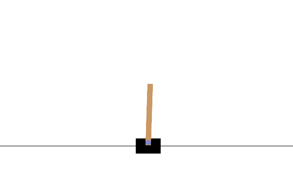
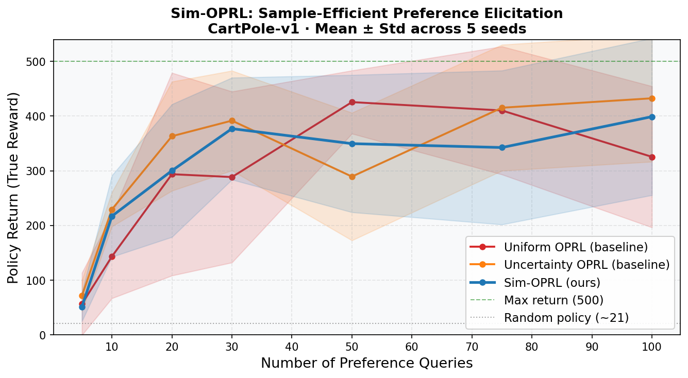

A full reproduction of Pace, Schölkopf, Rätsch & Ramponi (ICLR 2025) — learning a reward model from human preferences without any ground-truth reward labels, using a learned dynamics model to ask the most informative questions.
Watch two CartPole runs. Click which one keeps the pole balanced longer. Your preferences directly train the reward model — and shape the agent's behaviour in real time. No install required.
Open on HuggingFace Spaces →
Sim-OPRL agent after 60 preference queries — balancing CartPole for the full 500 steps.
The algorithm never saw a single ground-truth reward label.
You have a pre-recorded dataset of an agent interacting with an environment — but no reward labels. You want to learn the best possible policy. You're allowed to ask a human "which of these two trajectories is better?" — but human queries are expensive, so you need every question to count.
The naive approach: sample random trajectory pairs from the offline dataset and ask. This works, but wastes queries on comparisons where the answer is obvious or where the reward model already knows the answer.
Sim-OPRL's insight: instead of sampling from the dataset, use a learned dynamics model to simulate new trajectory pairs that are maximally informative — targeting regions of high reward uncertainty while avoiding regions the dynamics model can't reliably predict.
Train an ensemble of MLPs on (s, a) → s' transitions from the offline dataset. Uncertainty = std across ensemble predictions.
Simulate trajectory pairs using the dynamics model. Score each pair and present the most informative one to the human.
Update the Bradley-Terry reward model with the human's label. Re-optimise the policy via REINFORCE on the learned reward.
Given two trajectories τ₁ and τ₂, the probability that τ₁ is preferred:
For each candidate simulated trajectory, compute a score that balances two signals:
The pair with the highest score is the most informative query: the reward model disagrees most here, but the dynamics model is reliable enough to trust the simulation.
Uniform OPRL Random pairs from offline dataset — no active selection.
Uncertainty OPRL Dataset pairs where the reward model is most uncertain — active but in-distribution.
Sim-OPRL Simulated pairs scored by the acquisition function above — active and out-of-distribution in a controlled, trustworthy way.
Each method run for 5 random seeds on CartPole-v1. Policy return measured using the true environment reward — the algorithm never sees this during training.
| Policy Return (mean, 5 seeds) | Uniform OPRL | Uncertainty OPRL | Sim-OPRL |
|---|---|---|---|
| @ 10 queries | 143 | 229 | 217 ↑ |
| @ 30 queries | 289 | 392 | 377 ↑ |
| @ 100 queries | 326 | 433 | 399 |

Mean ± std across 5 seeds. Sim-OPRL reaches high return faster than Uniform OPRL at all query budgets. The advantage is sharpest in the low-data regime (≤ 30 queries).
CartPole's maximum return is 500 (500 surviving steps). A random policy averages ~21. All three methods eventually learn near-optimal behaviour — the question is how many human queries it takes to get there.
Written from scratch. No copy of the authors' code. Faithful to the paper's algorithm.
simoprl/
├── collect_data.py Mixed-quality offline dataset (4 noise levels)
├── dynamics_model.py Ensemble of 5 MLPs — bootstrap-trained, uncertainty via std
├── reward_model.py Ensemble with Bradley-Terry loss on (s,a) → step reward
├── preference_elicitation.py UniformOPRL, UncertaintyOPRL, SimOPRL
└── policy.py REINFORCE on learned reward; eval on true env
train.py Full comparison: 5 seeds × 3 methods × 100 queries
plot_results.py Reproduce main figure
app.py Interactive Gradio demo (hosted on HuggingFace Spaces)
Oracle vs real human. Training uses a simulated oracle that applies
CartPole's termination conditions (|θ| > 12°, |x| > 2.4 m) to determine quality —
not len(traj), which would always be equal for fixed-horizon simulated rollouts
and make labels meaningless.
Starting states for simulation. Sim-OPRL starts rollouts from near-upright states (|θ| < 8.4°) drawn from the offline dataset. Failing states produce zero-quality trajectories that give the oracle nothing to distinguish — filtering to upright states makes simulated queries informative from the first query.
Exploration in rollouts. A 30% random-action rate during simulated rollouts creates trajectory diversity. Without exploration, the current policy generates nearly identical trajectories and the reward model can't differentiate them.
git clone https://github.com/anshuman-dev/sim-oprl
cd sim-oprl
pip install -r requirements.txt
# Collect data, train dynamics model, run all 3 methods (5 seeds each, ~45 min)
python train.py
# Reproduce the main figure
python plot_results.py
# Launch the interactive demo locally
python app.py
No GPU required. Runs on CPU in under an hour.
The pre-trained dynamics model is included so app.py launches instantly.